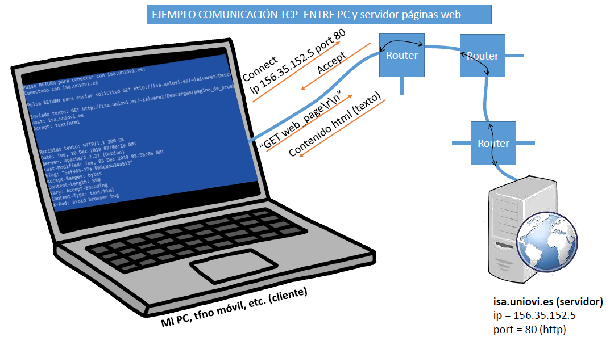

Una pagina web sencilla. Enlace a Otra pagina de prueba
Puede conectarse a ella utilizando el programa ClienteTcpEjemploHtml.zip. Descomprimir, cambiar extensión de archivo (change_to_exe --> exe) y ejecutar

Código fuente en: sock_cliente.c
Archivo .pro para compilación en Qt-Creator: SockCliente.pro